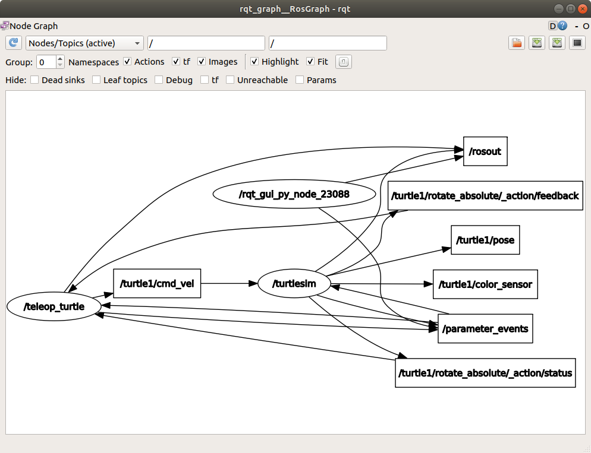

üî¨ Lab2: ROS#
Purpose#
This lecture accompanies the introduction to ROS used in class. We will apply the knowledge you learned by interacting with a simulated TurlteBot3 Burger.
ROS Introduction.#
The Robot Operating System (ROS) is a flexible framework for writing robot software. It is a collection of tools, libraries, and conventions that aim to simplify the task of creating complex and robust robot behavior across a wide variety of robotic platforms. ROS is sometimes called a meta operating system because it performs many functions of an operating system, but it requires a computer’s operating system such as Linux.
Why? Because creating truly robust, general-purpose robot software is hard. From the robot’s perspective, problems that seem trivial to humans often vary wildly between instances of tasks and environments. Dealing with these variations is so hard that no single individual, laboratory, or institution can hope to do it on their own.
As a result, ROS was built from the ground up to encourage collaborative robotics software development. For example, one laboratory might have experts in mapping indoor environments, and could contribute a world-class system for producing maps. Another group might have experts at using maps to navigate, and yet another group might have discovered a computer vision approach that works well for recognizing small objects in clutter. ROS was designed specifically for groups like these to collaborate and build upon each other’s work, as is described throughout this site.
ROS2 Humble Hawksbill: https://docs.ros.org/en/humble/
ROS Command-line tools#
The tutorials at Beginner: CLI Tools provide an excellent starting point for learning ROS (Robot Operating System) command-line tools. These tutorials are designed to help beginners get familiar with ROS and use its command-line tools effectively.
Follow the lab instructions provided below as you work through all 10 tutorials. The entire set should take about 2-3 hours to finish.
{kind=link}
1. Configuring environment#
For this firt tutorial, Configuring Environment, your environment has already been configured. Simply read through the page, but do not run any commands. Instead, open the
.bashrcfile by running the following commands:cd gedit .bashrc
You should see the following lines at the bottom of the
.bashrcfile.source /opt/ros/humble/setup.bash source ~/master_ws/install/setup.bash source /usr/share/gazebo/setup.sh source /usr/share/colcon_cd/function/colcon_cd.sh export ROS_DOMAIN_ID=0 # For master0 and robot0 export _colcon_cd_root=/opt/ros/humble/ export TURTLEBOT3_MODEL=burger export LDS_MODEL=LDS-01 # replace with LDS-02 if using new LIDAR source /usr/share/colcon_argcomplete/hook/colcon-argcomplete.bash
Your
ROS_DOMAIN_ID=XXshould match your computer ID, whereXXcorresponds to theXXinMasterXX. Update the file, save the changes, and exit.
2. Using turtlesim, ros2, and rqt#
Do not install
rqtand its plugins, as they are already installed.
3. Understanding nodes#
Complete this tutorial.
4. Understanding topics#
Try all the options for the checkboxes in
rqt_graph.
Recreate the graph shown above and save it as a .png file. While the block locations might differ from the example, ensure your graph structure matches. Save the graph by clicking the
Save as imagebutton in the top-right corner and submit it on Gradescope.Note
Do NOT take pictures of your computer screen using your phone because (i) it can result in sampling aliasing, as explained in ECE215/ECE315, (ii) it will require more steps compared to a simple screen capture, and (iii) the resulting image will always be blurrier than a direct screen capture.
{kind=link}
5. Understanding services#
Follow the instruction in this turtorial. At the end, spawn an additional turtle (so there are 3 turtles in total) near the center of the window. Right click on the title bar and select
Take Screenshot. You can also take a screenshot using thePrint Screenkey on your keyboard. Then, submit the screenshot on Gradescope.
Warning
You will receive a grade of -10 everytime you submit a picture of computer screen taken by your phone or mobile device.
{kind=link}
6. Understanding parameters#
Complete this tutorial.
7. Understanding actions#
Complete this tutorial.
8. Using rqt_console to view logs#
Complete this tutorial.
9. Launching nodes#
Complete this tutorial.
10. Recording and playing back data#
Create a directory called
lab2within your local repository. Then, create thebag_filesdirectory inside thelab2directory. As you follow the instruction in this tutorial, save thesubsetbag file in thebag_filesdirectory. Ensure the recording time is approimately 10 seconds. Push your code to your GitHub repository.
Deliverables#
Go to Gradescope and submit the
Lab2assignment.